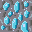
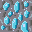
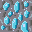

Ｃ＃言語
Unity
visual studio
Aseprite
Github
SourceTree
制作期間：２か月間
制作人数：３人(プログラマー３名)



// マップをランダム生成（外周＝壁、内部＝地面、ランダムで入口配置）
private void GenerateRandomMap()
{
for (int y = 0; y < map.GetLength(0); y++)
{
for (int x = 0; x < map.GetLength(1); x++)
{
if (y == 0 || y == map.GetLength(0) - 1 || x == 0 || x == map.GetLength(1) - 1)
{
map[y, x] = 0; // 壁
if (entranceFlag && Random.Range(0, 20) == 0)
{
map[y, x] = 2; // 入り口
entrancePlace = new Vector3Int(x, y, 0);
entranceFlag = false;
}
}
else map[y, x] = 1; // 地面
}
}
}
// 鉱石クラスターを配置（確率で種類を変化）
void PlaceOreClusters(int clusterCount, int clusterSize)
{
for (int k = 0; k < clusterCount; k++)
{
int startX = Random.Range(1, map.GetLength(1) - 1);
int startY = Random.Range(1, map.GetLength(0) - 1);
int ore = (Random.Range(0, 100) < 40) ? 3 : 4; // 鉄 or 銅
for (int l = 0; l < clusterSize; l++)
{
int x = Mathf.Clamp(startX + Random.Range(-1, 2), 1, map.GetLength(1) - 2);
int y = Mathf.Clamp(startY + Random.Range(-1, 2), 1, map.GetLength(0) - 2);
if (map[y, x] == 1) map[y, x] = ore;
}
}
}